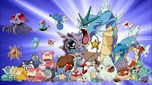
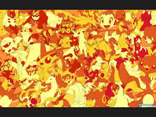
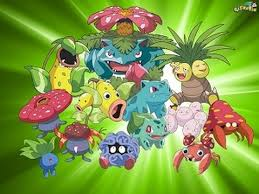

Pokémon (ポケモン Pokemon?) es una franquicia de medios que
originalmente comenzó como un videojuego RPG, pero debido a su popularidad
ha logrado expandirse a otros medios de entretenimiento como series de televisión,
juegos de cartas, ropa, entre otros, convirtiéndose en una marca que es reconocida
en el mercado mundial. Las ventas de videojuegos hasta el 1 de diciembre de 2006
habían alcanzado una cantidad de 312 millones de ejemplares
(incluyendo la venta de la versión Pikachu de la consola Nintendo 64),
1 logrando ocupar el segundo lugar de las sagas de videojuegos más vendidos de
Nintendo.2 La franquicia celebró su décimo aniversario el 27 de febrero de 2006